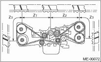

NOTE:
If only a single part is replaced, perform the work without removing the engine from vehicle. Refer to “Timing Belt” in PM section. 
1. Remove the V-belts.
2. Remove the crank pulley.
3. Remove the timing belt cover.
4. Remove the timing belt guide. (MT model)


5. If the alignment mark or arrow mark (which indicates the direction of rotation) on timing belt fade away, put new marks before removing the timing belt as shown in procedures below.
(1) Turn the crankshaft using ST, and align the alignment marks on crank sprocket, intake cam sprocket (LH), exhaust cam sprocket (LH), intake cam sprocket (RH) and exhaust cam sprocket (RH) with notches of timing belt cover and cylinder block.
| ST 499987500 | CRANKSHAFT SOCKET |
(2) Using white paint, put alignment and/or arrow marks on timing belts in relation to the cam sprockets.
Z1: 54.5 teeth
Z2: 51 teeth
Z3: 28 teeth

6. Remove the belt idler (A).

7. Remove the timing belt.
CAUTION:
After the timing belt has been removed, never rotate the intake and exhaust sprocket. If the cam sprocket is rotated, the intake and exhaust valve heads strike together and valve stems are bent.
2. AUTOMATIC BELT TENSION ADJUSTER ASSEMBLY AND BELT IDLER
1. Remove the belt idler (B) and (C).
2. Remove the belt idler No. 2.
3. Remove the automatic belt tension adjuster assembly.